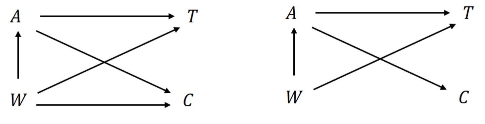

########################################
# 1. Point treatment: IPTW survival analysis
########################################
library(ipw)
# Estimate propensity score and compute weights
psmod <- ipwpoint(exposure = A,
denominator = ~ meno + size + grade + prog + estrg,
family = "binomial", link = "logit")
# IPTW-adjusted KM
library(survival)
km <- survfit(Surv(time, status) ~ A,
weights = psmod$ipw.weights)
########################################
# 2. Time-varying treatment: stabilized weights
########################################
library(ipw)
iptw <- ipwtm(exposure = trt, family = "binomial",
numerator = ~ age + sex,
denominator = ~ age + sex + cd4,
id = id, type = "all",
tstart = tstart, timevar = fuptime)
# Weighted Cox model
coxph(Surv(tstart, fuptime, status) ~ trt + age + sex +
cluster(id), weights = iptw$ipw.weights)Chapter 14 - Causal Inference in Survival Analysis
Slides
Lecture slides here. (To convert html to pdf, press E \(\to\) Print \(\to\) Destination: Save to pdf)
\[\newcommand{\Tt}{T^{(1)}} \newcommand{\Tc}{T^{(0)}} \newcommand{\Ta}{T^{(a)}} \newcommand{\Tat}{T^{(\overline a)}} \newcommand{\indep}{\perp \!\!\! \perp} \newcommand{\dd}{{\rm d}} \newcommand{\cc}{{\rm c}} \newcommand{\pr}{{\rm pr}}\]
Chapter Summary
Causal inference in survival analysis extends traditional models of association to estimate the effect of treatment or exposure on time-to-event outcomes under potential confounding. The counterfactual framework defines causal effects through potential outcomes and supports valid estimation under assumptions like consistency, exchangeability, and positivity. Causal estimands such as treatment-specific survival curves or hazard ratios can be identified using inverse probability weighting (IPW), standardization, or marginal structural models (MSMs).
Counterfactual framework
Each subject has potential failure times \(\Ta\), \(a = 0, 1\), representing the time-to-event under treatment \(a\).
Consistency: \[ T = A \Tt + (1 - A) \Tc \] where \(T\) is the observed time and \(A\) the observed treatment.
Exchangeability: Treatment is independent of potential outcomes given confounders \(W\): \[ \Ta \indep A \mid W. \]
Causal estimand: \[ \theta(t) = \pr(\Tt > t) - \pr(\Tc > t) \] (e.g., causal difference in survival probability at time \(t\))
Causal diagrams (DAGs) help visualize confounding, mediation, and guide variable selection.
Estimating causal effects
Two common methods to estimate \(S_a(t) = \pr(\Ta > t)\) under conditional exchangeability:
Inverse probability treatment weighting (IPTW): \[ \hat S_a^{\text{IP}}(t) = \frac{1}{n} \sum_{i=1}^n \frac{I(A_i = a,\; T_i > t)}{\pi_a(W_i)} \] where \(\pi_a(W) = \pr(A = a \mid W)\) is the propensity score.
Standardization: \[ \hat S_a^{\text{reg}}(t) = \frac{1}{n} \sum_{i=1}^n \hat S_a(t \mid W_i) \] where \(\hat S_a(t \mid W)\) is estimated from a Cox model within \(A = a\).
Both methods rely on correctly specified models (treatment or outcome) and assume no unmeasured confounding.
Censoring adjustment
When failure times are right-censored:
- Assumptions:
- \(T \indep C \mid A, W\) (general)
- \(T \indep C \mid A\) (simpler, stronger)

IPTW-adjusted Kaplan–Meier estimator: \[ \hat S_a^{\text{IP}}(t) = \prod_{u \le t} \left\{1 - \frac{\sum_i \hat w_{ai}(u)\, \dd N_i(u)}{\sum_i \hat w_{ai}(u)\, I(X_i \ge u)} \right\}, \] where \(\hat w_{ai}(t) = \big[\hat \pi_a(W_i)\, \hat G_a(t \mid W_i)\big]^{-1}\) and \(\hat G_a\) estimates survival from censoring.
Causal Cox model: \[ \lambda_a(t) = \exp(a \beta) \lambda_0(t), \] estimated via a weighted score function.
Marginal structural models (MSMs)
MSMs estimate causal effects by weighting observed data to mimic a randomized trial.
Point treatment model: \[ \lambda_a(t \mid V) = \exp(\beta a + \gamma^\top V)\lambda_0(t), \] where \(V\) is a subset of baseline covariates.
Stabilized weight: \[ w_i^{\text{s}}(t) = \frac{\pi_{A_i}(V_i) G_{A_i}(t \mid V_i)}{\pi_{A_i}(W_i) G_{A_i}(t \mid W_i)} \]
Time-varying treatment:
Treatment \(A(t)\) and confounders \(W(t)\) evolve over time. If \(W(t)\) is both a confounder and mediator, standard regression fails.

Marginal structural Cox model: \[ \lambda_{\overline a}(t \mid V) = \exp\big\{\beta\, a(t) + \gamma^\top V\big\} \lambda_0(t) \]
Weighting is done across time using: \[ w^{\text{s}}(t) = \prod_{j \le t} \frac{\pr(A_j \mid \overline A_{j-1}, V)}{\pr(A_j \mid \overline A_{j-1}, \overline W_j)} \]
Censoring is handled similarly using IPCW.
Example R code
Conclusion
Causal inference for time-to-event outcomes is built on the counterfactual framework, with assumptions that permit identification of treatment effects despite confounding and censoring. IPTW and standardization estimate marginal effects, while marginal structural models adjust for complex, time-varying confounding. These methods provide rigorous tools for answering causal questions in both observational and randomized survival studies.
R Code
Show the code
###############################################################################
# Chapter 14 R Code
#
# This script reproduces all major numerical results in Chapter 14, including:
# 1. IPTW analysis (marginal structural models) on the German Breast Cancer
# (GBC) data
# 2. IPTW & IPCW analysis on the HAART dataset (HIV/AIDS study)
###############################################################################
#==============================================================================
# (A) IPTW Analysis for the German Breast Cancer (GBC) Data
#==============================================================================
library(survival)
library(ipw)
library(tidyverse)
#------------------------------------------------------------------------------
# 1. Read and Prepare GBC Data
#------------------------------------------------------------------------------
gbc <- read.table("Data//German Breast Cancer Study//gbc.txt")
# Sort the data by time within each id
o <- order(gbc$id, gbc$time)
gbc <- gbc[o, ]
# Keep the first row for each id => first event data
df <- gbc[!duplicated(gbc$id), ]
# Set status = 1 if status in {1, 2}
df$status <- as.integer(df$status > 0)
head(df)
#------------------------------------------------------------------------------
# 2. Construct Treatment Indicator
#------------------------------------------------------------------------------
# A=1: hormone therapy, A=0: no hormone
df$A <- df$hormone - 1
#------------------------------------------------------------------------------
# 3. Estimate Propensity Scores via ipwpoint()
#------------------------------------------------------------------------------
tmp <- ipwpoint(
exposure = A,
family = "binomial",
link = "logit",
denominator = ~ meno + size + factor(grade) + nodes + prog + estrg,
data = df
)
#------------------------------------------------------------------------------
# 4. Naive vs. IPTW Kaplan-Meier Estimates
#------------------------------------------------------------------------------
# Naive version (unweighted)
obj.naive <- survfit(Surv(time, status) ~ A, data = df)
# IPTW version (using tmp$ipw.weights)
obj.iptw <- survfit(
Surv(time, status) ~ A,
weights = tmp$ipw.weights,
data = df
)
#------------------------------------------------------------------------------
# 5. Marginal Structural Cox Model (IPTW)
#------------------------------------------------------------------------------
obj_cox_iptw <- coxph(
Surv(time, status) ~ A,
weights = tmp$ipw.weights,
data = df
)
obj_cox_naive <- coxph(
Surv(time, status) ~ A,
data = df
)
# Print summaries for comparison
obj_cox_iptw
obj_cox_naive
# ----------------------------
# Standardization
# ----------------------------
# Fit Cox models with confounders
obj_cox_w_A1 <- coxph(Surv(time, status) ~ meno + size + grade + prog + estrg,
data = df, subset = (A == 1)) # for A = 1
obj_cox_w_A0 <- coxph(Surv(time, status) ~ meno + size + grade + prog + estrg,
data = df, subset = (A == 0)) # for A = 0
# Predict survival curves under A=1 and A=0
surv_A1 <- survfit(obj_cox_w_A1, newdata = df)
surv_A0 <- survfit(obj_cox_w_A0, newdata = df)
# Compute standardized survival probabilities
t1 <- surv_A1$time # time points for standardized survival
std_surv_a1 <- sapply(t1, function(t) {
mean(surv_A1$surv[surv_A1$time == t, ]) # mean for each time point
})
t0 <- surv_A0$time # time points for standardized survival
std_surv_a0 <- sapply(t0, function(t) {
mean(surv_A0$surv[surv_A0$time == t, ]) # mean for each time point
})
# ggplot: two panels for a = 1 and a = 0
# Different linetypes for naive, IPTW, standardized
# Extract data from obj.naive
surv_naive <- obj.naive |> broom::tidy()
naive_data <- tibble(
method = "Naive",
time = surv_naive$time,
estimate = surv_naive$estimate,
A = parse_number(surv_naive$strata)
)
# Extract data from obj.iptw
surv_iptw <- obj.iptw |> broom::tidy()
iptw_data <- tibble(
method = "IPTW",
time = surv_iptw$time,
estimate = surv_iptw$estimate,
A = parse_number(surv_iptw$strata)
)
# Standardized data
std_data <- tibble(
method = "Standardized",
time = c(t0, t1),
estimate = c(std_surv_a0, std_surv_a1),
A = c(rep(0, length(t0)), rep(1, length(t1)))
)
# Combine all data
plot_data <- bind_rows(naive_data, iptw_data, std_data) |>
mutate(
method = factor(method, levels = c("Naive", "IPTW", "Standardized"))
)
# View(plot_data)
# Plot using ggplot2
fig_causal_gbc <- ggplot(plot_data, aes(x = time, y = estimate, linetype = method)) +
geom_step(size = 1, linewidth = 1) +
facet_wrap(~ A, labeller = labeller(A = c(`0` = "No Hormone", `1` = "Hormone"))) +
scale_x_continuous("Time (months)", breaks = seq(0, 84, by = 12)) +
scale_y_continuous("Relapse-free survival probabilities", limits = c(0, 1)) +
theme_minimal() +
theme(
text = element_text(size = 12),
legend.position = "top",
legend.title = element_blank(),
legend.key.width = unit(1, "cm"),
panel.grid.major.x = element_blank(),
panel.grid.minor.x = element_blank()
)
ggsave("images/causal_gbc.png", fig_causal_gbc, width = 8, height = 4.5)
ggsave("images/causal_gbc.eps", fig_causal_gbc, width = 8, height = 4.5)
#==============================================================================
# (B) IPTW & IPCW Analysis of the HAART Data (HIV/AIDS Study)
#==============================================================================
# The "haartdat" dataset is included with {ipw}
data("haartdat")
colnames(haartdat)[8] <- "cd4"
head(haartdat)
#------------------------------------------------------------------------------
# 1. Compute IPTW and IPCW Weights with ipwtm()
#------------------------------------------------------------------------------
# (A) IPTW weights for time-varying treatment "haartind"
iptw <- ipwtm(
exposure = haartind,
family = "survival",
numerator = ~ sex + age,
denominator = ~ cd4 + sex + age,
id = patient,
tstart = tstart,
timevar = fuptime,
type = "first",
data = haartdat
)
# (B) IPCW weights for dropout (censoring)
ipcw <- ipwtm(
exposure = dropout,
family = "survival",
numerator = ~ sex + age,
denominator = ~ cd4 + sex + age,
id = patient,
tstart = tstart,
timevar = fuptime,
type = "first",
data = haartdat
)
#------------------------------------------------------------------------------
# 2. Marginal Structural Cox Model (IPTW * IPCW)
#------------------------------------------------------------------------------
msm_fit <- coxph(
Surv(tstart, fuptime, event) ~ haartind + sex + age + cluster(patient),
data = haartdat,
weights = iptw$ipw.weights * ipcw$ipw.weights
)
summary(msm_fit)
#------------------------------------------------------------------------------
# 3. Naive Cox Model (Ignoring Weights)
#------------------------------------------------------------------------------
naive_fit <- coxph(
Surv(tstart, fuptime, event) ~ haartind + sex + age + cluster(patient),
data = haartdat
)
summary(naive_fit)
#------------------------------------------------------------------------------
# 4. Cox Model with confounders as time-varying covariates
#------------------------------------------------------------------------------
timevar_fit <- coxph(
Surv(tstart, fuptime, event) ~ haartind + sex + age + cd4 + cluster(patient),
data = haartdat
)
summary(timevar_fit)
# use gtsummary::tbl_regression() to create a summary table
library(gtsummary)
# 1) One tbl_regression per model (edit term labels to match your model coef names)
tbl_msm <- tbl_regression(
msm_fit,
exponentiate = TRUE,
label = list(haartind ~ "HAART Treatment"),
estimate_fun = ~style_ratio(.x, digits = 3)
)
tbl_naive <- tbl_regression(
naive_fit,
exponentiate = TRUE,
label = list(haartind ~ "HAART Treatment"),
estimate_fun = ~style_ratio(.x, digits = 3)
)
# NOTE: ensure the left-hand side in `label = list(<term> ~ "...")`
# matches the coefficient name in `timevar_fit`.
# If the term is e.g. haartind_tv, change it accordingly.
tbl_timevar <- tbl_regression(
timevar_fit,
exponentiate = TRUE,
label = list(haartind ~ "HAART Treatment"),
estimate_fun = ~style_ratio(.x, digits = 3)
)
# 2) Merge side-by-side with spanners for each model
tbl <- tbl_merge(
tbls = list(tbl_msm, tbl_naive, tbl_timevar),
tab_spanner = c("**MSM**", "**Naive**", "**Time-varying**")
) |>
modify_header(label = "**Covariate**") |>
modify_caption("Table 14.1: Comparison of Cox Model Estimates for HAART Data")
tbl